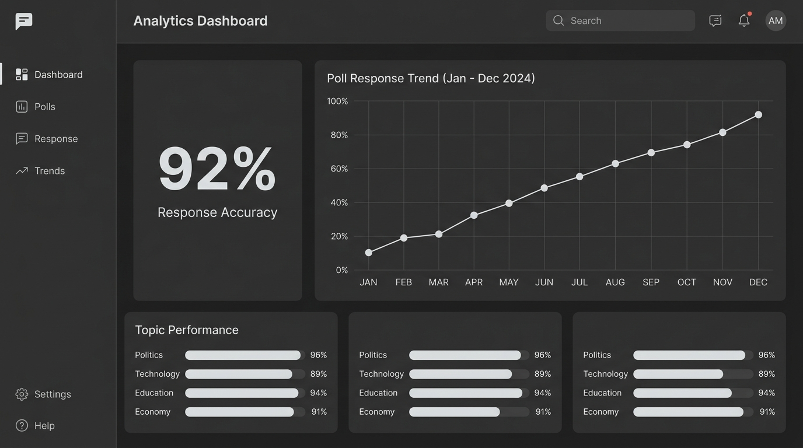

The polling platform that empowers organizations to publish targeted surveys and engage citizens through mobile voting — with live analytics.

Getitright gives organizations real participation data, without the noise. Publish, engage, analyze — all in one platform.
Publish polls by county, demographic, or topic. Reach the exact audience that matters to your organization's mission.
Watch responses stream in real-time. Track turnout, percentages, and trend lines as they happen — no refresh needed.
Citizens vote through a dedicated Android app with one-tap simplicity. Single-vote protection guarantees fairness.
Download clean PDF and CSV reports to present findings to leadership, board members, and stakeholders instantly.
Getitright turns raw participation into clear, actionable visuals that show you exactly what's happening across every county and demographic.
You need a solution that keeps up. That's why we developed Getitright. A purpose-built approach to streamline your organization's feedback collection.
Discover More →| Getitright | Traditional Surveys | Paper Ballots | |
|---|---|---|---|
| Real-time results | Instant live dashboards | Delayed processing | Manual counting |
| Mobile voting | Dedicated Android app | No mobile support | Physical only |
| County-level targeting | All 47 counties | Limited reach | Location-bound |
| Duplicate vote protection | Device-level verification | Basic checks | No protection |
| Live analytics dashboards | Charts, maps, trends | No dashboards | No dashboards |
| PDF & CSV exports | One-click export | Manual export | No digital records |
| Multi-language support | English & Kiswahili | Varies | Print-dependent |
Join organizations across Kenya already using Getitright to publish polls, engage citizens, and make data-driven decisions.